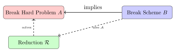

Chapter 6: Cryptographic Protocols and Security Proofs¶
Cryptographic protocols combine primitives to achieve security goals. This chapter introduces formal security definitions — games, reductions, and proofs — that transform intuitive claims like “this is secure” into precise, falsifiable statements.
The gap between “sounds secure” and “is provably secure” is where most real-world disasters live. WEP was designed by engineers who believed XOR-with-a-keystream was sufficient; RC4’s statistical biases and IV reuse made it catastrophically broken in practice. Formal definitions exist precisely to close that gap: by pinning down what an adversary is allowed to do and what “winning” means, we convert vague intuition into something a reduction argument can actually refute.
6.1 Security Definitions and Games¶
Definition 6.1 (IND-CPA Security)
A symmetric cipher \((\mathsf{Enc}, \mathsf{Dec})\) is IND-CPA (indistinguishable under chosen-plaintext attack) secure if for all PPT adversaries \(\mathcal{A}\):
where the game is:
-
Challenger generates \(K \leftarrow_\$ \mathcal{K}\), bit \(b \leftarrow_\$ \{0,1\}\)
-
\(\mathcal{A}\) may query encryption oracle \(\mathsf{Enc}_K(\cdot)\) polynomially many times
-
\(\mathcal{A}\) submits challenge messages \(m_0, m_1\) with \(|m_0| = |m_1|\)
-
Challenger returns \(c^* = \mathsf{Enc}_K(m_b)\)
-
\(\mathcal{A}\) outputs \(b'\); wins if \(b' = b\)
The encryption oracle in step 2 is what separates IND-CPA from simple message privacy. Allowing an adversary to encrypt arbitrary plaintexts models real deployment: in TLS, an attacker who controls part of a web page can inject chosen content into HTTPS-encrypted requests (the BEAST and CRIME attacks exploited exactly this). A cipher that leaks anything about the plaintext — even a single bit — when the adversary can choose what else gets encrypted fails IND-CPA. This is why ECB mode fails immediately: encrypting the same block always yields the same ciphertext, so distinguishing \(m_0 = \texttt{AAAA}\) from \(m_1 = \texttt{BBBB}\) requires only one chosen-plaintext query.
Definition 6.2 (IND-CCA2 Security)
Extends IND-CPA by allowing decryption queries before and after the challenge (but not on \(c^*\) itself). CCA2 security is required for public-key encryption schemes.
The CCA2 oracle models an attacker who can cause a victim system to decrypt ciphertexts and observe the result — through error messages, timing differences, or padding oracle responses. RSA-PKCS#1v1.5 without additional integrity protection is famously CCA2-insecure: Bleichenbacher’s 1998 attack submitted millions of modified ciphertexts, used the “bad padding” error response as a decryption oracle, and recovered the full plaintext. OAEP padding was designed to resist exactly this class of attack by making every decryption failure indistinguishable from any other. The lesson is that IND-CPA security isn’t enough whenever the adversary can observe anything about failed decryptions — which is almost always true in practice.
6.1.1 Security Reductions¶
A security proof shows that breaking scheme \(B\) would imply breaking a hard problem \(A\):

Reductions are contrapositive arguments: if problem \(A\) is hard (no efficient algorithm exists), then scheme \(B\) must be secure (no efficient attack exists either), because an efficient attack on \(B\) would give an efficient solver for \(A\). The quality of a reduction matters enormously. A “tight” reduction loses no advantage: an adversary with advantage \(\epsilon\) against \(B\) translates directly to advantage \(\epsilon\) against \(A\). A “loose” reduction might lose a factor of \(q\) (the number of oracle queries), which forces larger parameter choices to compensate. Practical cryptographers care about tightness because it determines the concrete security level, not just the asymptotic one.
Example 6.1 (ElGamal is IND-CPA Secure under DDH)
Theorem: ElGamal encryption over a group where DDH holds is IND-CPA secure.
Proof sketch: Suppose \(\mathcal{A}\) breaks ElGamal IND-CPA with non-negligible advantage \(\epsilon\). Construct reduction \(\mathcal{R}\) that uses \(\mathcal{A}\) to distinguish \((g^a, g^b, g^{ab})\) from \((g^a, g^b, g^c)\) for random \(c\):
Given DDH challenge \((g^a, g^b, g^c)\): set \(pk = g^a\), simulate the IND-CPA game using \(g^b\) as the nonce, \(g^c\) as the mask. If \(c = ab\): ciphertext is valid ElGamal, so \(\mathcal{A}\) guesses correctly with probability \(1/2 + \epsilon\). If \(c\) is random: ciphertext looks like a random group element, so \(\mathcal{A}\) guesses uniformly. \(\mathcal{R}\)’s DDH advantage \(= \epsilon\), contradicting DDH hardness. \(\square\)
6.2 Formal Verification of Protocols¶
Manual analysis of cryptographic protocols fails in ways that are hard to anticipate. The Needham-Schroeder Public Key protocol was published in 1978 and widely taught as correct; Gavin Lowe found a man-in-the-middle attack in 1995 using an automated tool, seventeen years later. The attack is subtle: it requires an active attacker who is also a legitimate principal, and it exploits an identity confusion that no amount of informal reasoning had caught.
This is why formal verification tools exist. They don’t just check the cases humans think to check — they exhaustively explore the state space of all possible attacker behaviors and message orderings, making it impossible to overlook a clever interleaving.
6.2.1 ProVerif and Tamarin¶
ProVerif models protocols in an applied pi-calculus and automatically searches for traces that violate stated security properties. It handles unbounded sessions and an arbitrary number of protocol participants, so it catches attacks that only manifest after many runs. The tool works by translating the protocol into Horn clauses and running a resolution procedure; if the resolution terminates without finding a violating trace, secrecy or authentication is proved. ProVerif was used to formally verify the Signal Protocol, TLS 1.3, and portions of WireGuard.
Tamarin uses a different model: multiset rewriting rules with a built-in adversary who can intercept, drop, and forge messages on the Dolev-Yao network model. Security properties are expressed in a fragment of linear temporal logic. Where ProVerif resolves automatically, Tamarin sometimes requires manual guidance via lemma annotations, but it handles stateful protocols and complex key derivation hierarchies more naturally. The TLS 1.3 draft was analyzed with Tamarin; the tool uncovered that certain resumption modes had weaker forward secrecy than the core handshake.
What both tools catch that manual analysis misses: reflection attacks (where a prover’s own message is replayed back to it), type confusion (where a nonce intended as a session ID is accepted as an authenticator), and parallel session attacks (where interleaving two simultaneous runs creates a state the protocol designer never considered). The Needham-Schroeder attack is a parallel session attack. Manual analysts naturally reason about a single session; tools reason about all sessions simultaneously.
The limitation of symbolic verification is the Dolev-Yao abstraction: messages are treated as terms, not bit strings. The model assumes encryption is perfect and that XOR and modular arithmetic behave ideally. Computational soundness results (Backes-Pfitzmann-Waidner, Cortier-Warinschi) partially bridge this gap, but symbolic verification can miss attacks that exploit algebraic structure — such as the malleability attacks on CBC mode that symbolic models treat as impossible.
6.3 Zero-Knowledge Proofs¶
Definition 6.3 (Zero-Knowledge Proof)
An interactive proof \((P, V)\) for language \(L\) is zero-knowledge if it satisfies:
-
Completeness: If \(x \in L\), honest \(P\) convinces \(V\) with high probability
-
Soundness: If \(x \notin L\), no cheating \(P^*\) convinces \(V\) except with negligible probability
-
Zero-Knowledge: \(V\) learns nothing beyond \(x \in L\): \(\exists\) simulator \(S\) such that \(\{(P, V)(x)\} \approx S(x)\)
The simulator argument is the precise meaning of “learns nothing.” If a simulator who doesn’t know the witness can produce transcripts that are computationally indistinguishable from real ones, then the verifier can’t extract the witness from the transcript — because anything in the transcript could have been generated without the witness. This is what distinguishes zero-knowledge from merely “not revealing the witness directly”: even statistical correlations that don’t directly expose the witness are forbidden.
6.3.1 Schnorr Protocol (Sigma Protocol)¶
Proves knowledge of discrete logarithm \(x\) such that \(h = g^x\) in group \(G\):
| Prover (knows \(x\)) | Verifier (knows \(g, h\)) | |
|---|---|---|
| \(r \leftarrow_\$ \mathbb{Z}_q\); \(R = g^r\) | \(\xrightarrow{R}\) | |
| \(\xleftarrow{c}\) | \(c \leftarrow_\$ \mathbb{Z}_q\) | |
| \(s = r + cx \bmod q\) | \(\xrightarrow{s}\) | Check: \(g^s = R \cdot h^c\)? |
Soundness: Given two transcripts \((R, c, s)\) and \((R, c', s')\) with \(c \neq c'\):
The extractor recovers witness \(x\) — proving knowledge.
The randomness of \(r\) is load-bearing. If a prover reuses \(r\) across two challenges \(c\) and \(c'\), the equation above lets anyone compute the secret \(x\) from the two responses. This is how Sony’s PlayStation 3 ECDSA key was extracted in 2010: the firmware signing used a static nonce instead of a fresh random \(r\). The attacker observed two signatures over different messages with the same \(r\) value, then solved the resulting pair of equations. A correct Schnorr implementation must use a fresh, uniformly random \(r\) for every proof.
Fiat-Shamir Transform: Replace the verifier’s random challenge with a hash of the commitment: \(c = H(g, h, R)\). This converts the Sigma protocol to a non-interactive zero-knowledge (NIZK) proof. Used in Schnorr signatures, STARK proofs, and many ZKP systems.
The Fiat-Shamir transform is secure in the random oracle model, where \(H\) behaves as a truly random function. In the standard model, it can fail against adversaries who program the hash function. In practice, the hash function must include all public parameters and the full commitment — omitting any component creates a selective-forgery attack. Early implementations of ECDSA in embedded devices sometimes hashed only the message, omitting the curve parameters, enabling cross-curve forgeries.
6.3.2 Modern ZKP Systems¶
| System | Type | Proof Size | Verify Time | Trusted Setup |
|---|---|---|---|---|
| Groth16 | zk-SNARK | \(\sim 200\) bytes | \(\sim 1\) ms | Yes (per circuit) |
| PLONK | zk-SNARK | \(\sim 400\) bytes | \(\sim 5\) ms | Universal setup |
| STARKs | ZK-STARK | \(\sim 100\) KB | \(\sim 100\) ms | No |
| Bulletproofs | NIZK | \(\sim 700\) bytes | \(\sim 1\) sec | No |
Applications: blockchain privacy (Zcash uses zk-SNARKs; Monero uses Bulletproofs), identity verification, regulatory compliance without data disclosure, secure voting.
The trusted setup in Groth16 is a significant practical concern. The ceremony generates a structured reference string (SRS) from secret randomness; if any participant in the ceremony retains their secret contribution, they can forge proofs for any statement. Zcash’s “Powers of Tau” ceremony involved thousands of contributors precisely to make it computationally implausible that all of them colluded. PLONK’s universal setup mitigates this somewhat: one ceremony covers all circuits of bounded size, rather than requiring a new ceremony per circuit. STARKs eliminate the trusted setup entirely by replacing polynomial commitments with hash-based cryptography — at the cost of much larger proofs.
6.4 Secure Multi-Party Computation (MPC)¶
Definition 6.4 (MPC)
Multiple parties \(P_1, …, P_n\) each hold private input \(x_i\). They jointly compute \(f(x_1, …, x_n)\) such that each party learns only the output — not others’ inputs.
Yao’s Garbled Circuits: Two-party protocol where one party garbles (encrypts each gate) and the other evaluates. Enables arbitrary function computation. Used in secure auctions and private set intersection.
SPDZ Protocol: Multi-party protocol with preprocessing; allows \(n\) parties with security against active adversaries corrupting \(< n/2\) parties. Used in financial computation and healthcare data analysis.
Threshold Signatures (MPC-based): Rather than secret sharing a private key (Shamir), ECDSA signing is performed as MPC — the key is never assembled in one place. Used by Fireblocks, crypto custodians, and multi-sig wallets.
The correctness of MPC security proofs depends heavily on the corruption model. The semi-honest model assumes corrupted parties follow the protocol but try to learn information from their views; the malicious model assumes corrupted parties can deviate arbitrarily. Protocols secure against malicious adversaries require additional mechanisms — zero-knowledge proofs, MACs, or authenticated secret sharing — and are substantially more expensive. Most deployed MPC systems make an explicit choice between these models, and that choice should match the threat model: semi-honest security is appropriate when the parties are trusted organizations but privacy must be provable; malicious security is required when any party could be adversarial.
6.5 Oblivious RAM (ORAM)¶
Definition 6.5 (ORAM)
Oblivious RAM lets a client access a remote database such that the server learns nothing about which locations are accessed — only that accesses occurred.
Standard RAM reveals access patterns. If a cloud server knows you repeatedly access record id=42 before a stock trade, it can infer your trading strategy.
Construction (trivial): Fetch the entire database on each access — \(O(N)\) bandwidth. Efficient constructions (PathORAM, Ring ORAM) achieve \(O(\log N)\) bandwidth overhead.
PathORAM works by mapping each data block to a random leaf in a binary tree and storing encrypted blocks along every root-to-leaf path. Every access follows the same procedure: read the entire path (hiding which block you want), retrieve the target block, and write the path back with the block re-randomized to a new leaf. The \(O(\log N)\) cost comes from the path length. The key insight is that re-randomizing positions on every access prevents the server from correlating accesses even if it observes every read and write. In practice, ORAM carries a 20–100\(\times\) bandwidth overhead compared to direct access, which limits its use to latency-tolerant or highly privacy-sensitive applications such as secure enclaves and encrypted search.
6.6 Secure Channel Protocols¶
6.6.1 TLS 1.3 Handshake (Forward Reference)¶
| Client | Server | |
|---|---|---|
| \(\xrightarrow{\text{ClientHello: key\_share}(g^a)}\) | ||
| \(b \leftarrow_\$ \mathbb{Z}_q\); compute \(g^{ab}\); derive keys | ||
| \(\xleftarrow{\text{ServerHello: key\_share}(g^b), \text{Certificate, Finished}}\) | ||
| Client derives keys from \(g^{ab}\); verifies cert | ||
| \(\xrightarrow{\text{Finished}}\) |
Key schedule (TLS 1.3): Uses HKDF with \(\text{early secret} \to \text{handshake secret} \to \text{master secret} \to \text{application keys}\). Full forward secrecy: session keys derived from ephemeral \(g^{ab}\), so compromise of the long-term server key does not reveal past session keys.
TLS 1.3 eliminated every cipher suite that didn’t provide forward secrecy — RSA key exchange, static DH, and all the export-grade ciphers that fueled FREAK and Logjam. The only handshake modes that survive are (EC)DHE and PSK-with-DHE. This was a deliberate, breaking change from TLS 1.2: any server that still advertises RSA key exchange is running 1.2 or earlier.
0-RTT Security Considerations. TLS 1.3 introduced 0-RTT resumption, which lets a client send application data in the first flight without waiting for the server. This works because both sides retain a resumption master secret from the previous session. The security trade-off is significant: 0-RTT data has no forward secrecy (if the resumption secret is later compromised, the data is exposed) and it is not replay-protected. The TLS specification explicitly forbids non-idempotent operations over 0-RTT; HTTP GET requests are acceptable candidates, but POST requests that create orders or transfer funds are not. Servers that enable 0-RTT without enforcing idempotency create a replay window that attackers can exploit: intercepting the 0-RTT data and retransmitting it to a different server instance (or to the same server after the anti-replay state expires) causes the operation to execute twice. Mitigations include single-use session tickets and replay caches, but these impose state costs that undermine the performance argument for 0-RTT in large-scale deployments.
6.7 Signal Protocol (Double Ratchet)¶
The Signal Protocol (used by Signal, WhatsApp, Facebook Messenger, iMessage) provides:
-
Forward secrecy: Compromise of current key does not reveal past messages
-
Break-in recovery (Post-Compromise Security): Recover security after compromise
-
Asynchronous setup: Pre-keys enable communication when recipient is offline
X3DH (Extended Triple Diffie-Hellman): Initial key agreement using identity keys + signed pre-keys + one-time pre-keys.
The X3DH design is careful about what each key type protects. The one-time pre-key (OPK) provides the strongest forward secrecy for the initial message: once it’s consumed, no future compromise can reveal the initial shared secret. But pre-keys must be uploaded to the server in batches before a conversation starts; if the server runs out of OPKs for a recipient, the protocol falls back to the signed pre-key (SPK) alone, which is slightly weaker. Signal’s server doesn’t learn anything about which pre-keys get used for which conversations, but it does know when an OPK is consumed, which creates a timing correlation. The cryptographic design acknowledges this and treats it as an acceptable metadata leak.
Double Ratchet:
-
Diffie-Hellman ratchet: Each message in a new session derives new root and chain keys via DH step; provides break-in recovery
-
Symmetric ratchet: Within a session, derives per-message keys via KDF chain; provides forward secrecy
The Double Ratchet achieves both forward secrecy and post-compromise security simultaneously through the interplay of its two ratchets, and understanding why requires seeing them as complementary mechanisms rather than redundant ones. The symmetric ratchet alone can provide forward secrecy: each message derives a fresh key by feeding the previous chain key through a KDF, so deleting used keys means past messages can’t be decrypted even with the current chain key. But symmetric ratcheting offers no recovery after compromise — if an attacker captures the current chain key, they can compute all future message keys by running the KDF forward. The DH ratchet fixes this: every time a new DH public key appears in an incoming message, both sides perform a fresh DH exchange and inject the result into the root KDF, producing new chain keys that the attacker’s captured chain key can’t predict. This is break-in recovery: the window of compromise is bounded by the DH ratchet step, which happens at least once per direction of conversation. An adversary who compromises a device during a conversation can read messages sent before the next DH ratchet step, but loses access after both sides rotate their DH ephemeral keys — which happens automatically on the next round-trip.
Out-of-order message handling is an important edge case. The symmetric ratchet is sequential: keys are derived in order and deleted after use. If message 5 arrives before message 4, the receiver must compute and cache the key for message 4 (by running the KDF one extra step) without being able to delete it yet. Signal caps the number of skipped message keys it caches to limit the damage if a device is compromised while holding future keys.
6.8 Noise Protocol Framework¶
The Noise Protocol Framework is a systematic toolkit for building handshake protocols from a small set of composable patterns. Rather than inventing a new protocol for every application (with the attendant risk of subtle errors), developers select a Noise handshake pattern that matches their authentication requirements and get a protocol with a formal security analysis essentially for free.
A Noise handshake pattern describes a sequence of message flows, each consisting of DH operations and key derivations. The pattern XX handles mutual authentication when neither party knows the other’s static key in advance: both sides transmit their static public keys during the handshake, encrypted under the evolving handshake state. The pattern IK handles the case where the initiator already knows the responder’s static key (as in Signal’s X3DH setup), enabling one fewer round-trip. The pattern NX handles one-sided authentication, analogous to a web server presenting a certificate to an unauthenticated client.
The framework’s key insight is that all of these patterns share the same underlying machinery: a chained hash state that accumulates every sent and received byte, a running symmetric key derived by mixing in each DH output, and AEAD encryption for payload confidentiality and integrity. The security properties — which parties authenticate to which, when forward secrecy begins, what an adversary who compromises a key learns about past sessions — follow mechanically from the pattern structure, and the Noise specification proves these properties for each named pattern.
Noise sees practical deployment in WireGuard, which uses the IKpsk2 pattern (IK with a pre-shared symmetric key as an additional layer of authentication). The tight codebase and formal foundation are two reasons WireGuard’s security properties are substantially easier to audit than IKEv2’s. Lightning Network BOLT 8 also uses Noise (XK pattern) for encrypted peer-to-peer channels. A common implementation pitfall is failing to include all public keys in the handshake hash: omitting a static or ephemeral key from the “mixed” transcript allows key substitution attacks where an attacker replaces the key with their own, breaking authentication without breaking the AEAD integrity.
Exercises¶
Exercise 6.1
Prove that a one-time pad (OTP) is IND-CPA secure. Then show it is not IND-CCA2 secure by constructing a decryption oracle attack.
Exercise 6.2
Implement the Schnorr identification protocol in Python over \(\mathbb{Z}_p^*\) for a 256-bit prime \(p\). Demonstrate both the interactive version and the Fiat-Shamir non-interactive version.
Exercise 6.3
In the context of TLS 1.3: (a) Explain why TLS 1.3 provides forward secrecy while TLS 1.2 with RSA key exchange does not. (b) What does “0-RTT” (zero round-trip time) resumption achieve and what security trade-off does it make?
Exercise 6.4 (Signal Protocol)
Explain the Double Ratchet algorithm: (a) What does the DH ratchet provide that the symmetric ratchet alone cannot? (b) Why does each new conversation require a new ephemeral DH key? (c) How does the protocol handle message loss (messages arriving out of order)?
Exercise 6.5
Describe a practical application of zero-knowledge proofs in identity verification: a user proves they are over 18 without revealing their birthdate. Sketch the ZKP construction using Schnorr-based techniques.